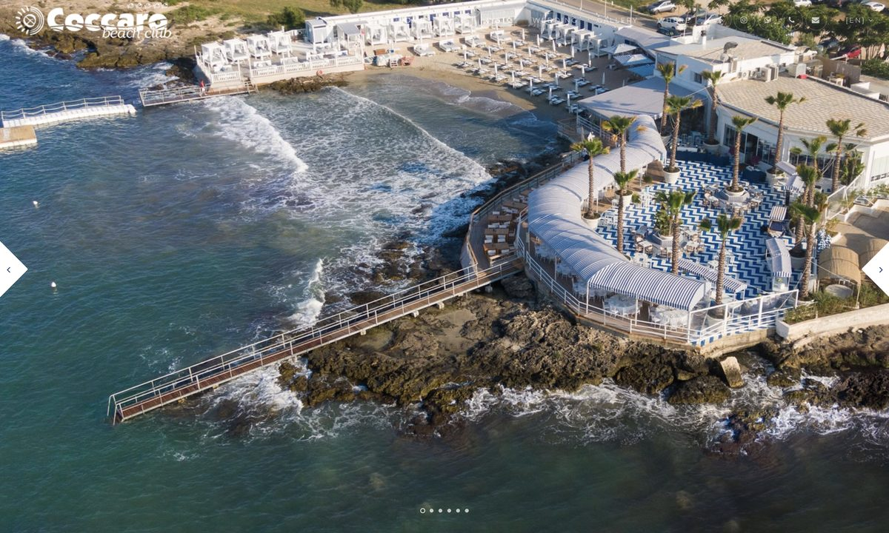

Day 7 — Coccaro Beach + Antiche Mura
Wednesday, May 27, 2026
Slow morning, beach day + lunch at Coccaro Beach Club (2 gazebos reserved), evening dinner at Antiche Mura in Polignano 8:30 PM.

PLACES & MAP LINKS — tap any place to open in Google Maps
🏖️ Beach + Lunch — 12-4 PM — 📍 Coccaro Beach Club
2 gazebos reserved (€100 each). Lunch on raised deck. Wheelchair accessible via wooden walkways.
↺ Decompress at Borgobianco (~4:00-7:30 PM) before Polignano dinner
🍴 Dinner — 8:30 PM — 📍 Restaurant Antiche Mura
Via Roma 11, Polignano old town. Reserved. ~3-4 min walk from Lama Monachile.
🅿️ Parking — evening — 📍 Parcheggio Pino Pascali (Polignano)
Park here for the Antiche Mura dinner.
SIDE QUESTS
⚡ 📍 Swim from the Coccaro Beach Club rocks (Rob & Maddison only)
Maddison swims from the ladder off the wooden walkway. Parents stay on the lounger deck or restaurant terrace — same property, no travel needed.
CONTACTS
Coccaro Beach Club: +39 080 412 3467
Antiche Mura: +39 080 424 2476
NOTES
- Coccaro: wooden walkways + raised lounger decks above the rocks — works for the chair.
- Coccaro deck-level table for lunch = sea view without sand transfer for Dad.
- ~25 min drive each way to Coccaro.
- Decompress at Borgobianco between beach and dinner (5-7:30 PM).
- Antiche Mura is intimate stone-walled dining room. Reserved table.